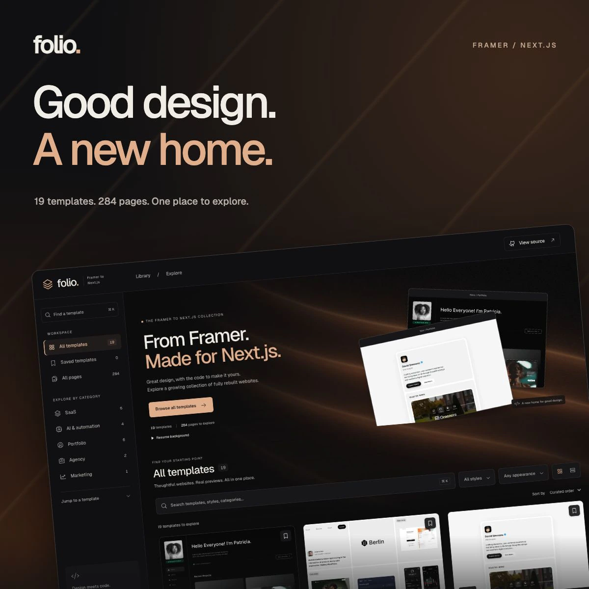

Six optimized images, matching case-study copy, and a ready-to-use implementation prompt. Prepared for the first grid tile and case-study dialog currently occupied by Akkivo.

Square grid cover
Case-study hero
Lead image
The idea, left paired image
The idea, right paired image
The experience, wide image